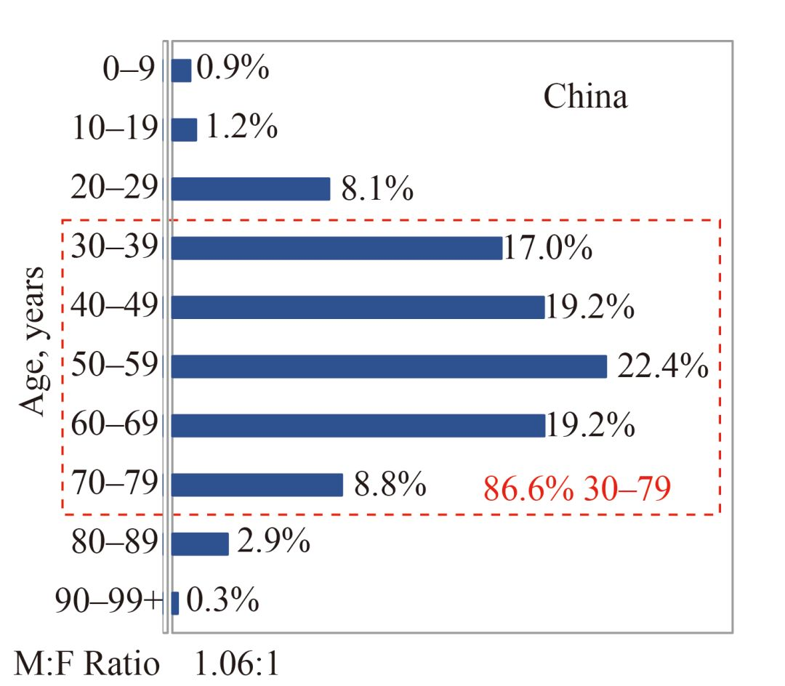
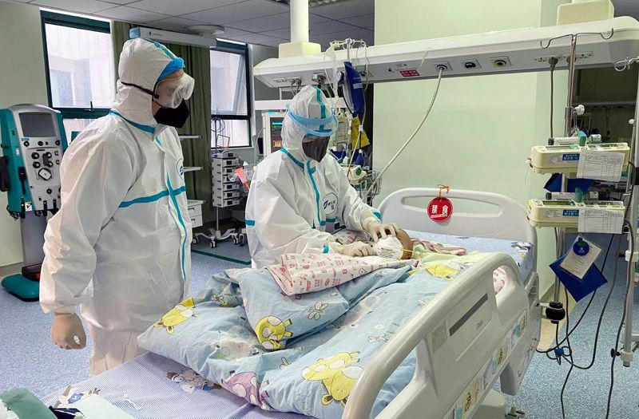

新加坡一名女性同时感染登革热和新冠肺炎
原文链接 备份链接 图片来源：pexels 文：央视新闻 孙牧宁 近日，新加坡卫生部门通报称，一名57岁的女性同时确诊感染登革热和新冠病毒肺炎，这是新加坡首例类似病例。 卫生部称，这名57岁的病患最初送医后被确诊感染登革热。在住院后，该名 …

一则好消息：儿童或在新冠疫情中幸免于难。迄今尚未看到儿童因新冠病毒感染而死亡的报道。
据中国疾控中心 2 月 17 日数据，在确诊的 44672 例患者中有 0.9% 为 9 岁以下婴幼儿，约为 400 例；19 岁以下患者占比 2.1%，938 例左右。
此前的不完全统计显示，全国儿童确诊病例中 26.8% 有疫源地暴露史，71.2% 有明确的感染家庭聚集史。可见家庭内密切接触是儿童感染新冠病毒的主要方式。

图 | 全国各个年龄段新冠患者确诊的比例分布。在确诊的 44672 例患者中有 0.9% 为 9 岁以下婴幼儿。（来源：China CDC Weekly）
专家认为，从全国疫情分布看，儿童病例报告数有增多趋势，主要原因有疫情逐渐进入高峰、家庭聚集病例发病多、病原检测逐渐普及等，但轻症感染例数占比更高。相对成人而言，重症患者比例在儿童患者中低了许多。
临床一线很是重视在此次疫情中的儿童群体。中华医学会儿科学分会、《中华儿科杂志》编辑委员会在线发表了《儿童 2019 新型冠状病毒感染的诊断与防治建议(试行第一版)》指导临床合理诊疗。近期各地也相继发布一系列的相关指南和建议。
症状轻微

285 例全国报告儿童确诊病例中统计了 134 例确诊儿童病例的临床表现：病情大多较轻，恢复较快，预后良好；发热和咳嗽较为常见，还有乏力、肌痛、鼻塞、咽痛、头痛、恶心、呕吐、腹痛和腹泻等表现，多在 1 周内消失。
在 117 例有体温记录患儿中，89 例 (76.1%) 有发热(高热 11 例，中低热 17 例，数据不详者 61 例；热程多为 1 天到 2 天；热程最长 8 天，热峰达 40.2 ℃)。无症状感染 9 例(6.7%)；轻型 87 例(64.9%)；普通型 36 例(26.9%，包括 7 例亚临床型)；危重型 2 例(1.5%)，有创机械通气，均有基础疾病史。
来自上海的专家建议说，儿童新冠感染者中，发热咳嗽是常见的症状，但要注意合并的消化道症状，腹泻和呕吐。儿童与成人患者临床表现、病程、转归存在一定差异，其机制尚不清楚。
专家强调指出，儿童病例多以无症状和轻型感染为主，不能因为临床症状轻微或者不典型，造成新冠病毒感染的漏诊和误诊。此外，由于儿童病例轻症为主，胸部 CT 缺乏特异性，很难单纯依靠胸部 CT 做出明确的诊断，所以 CT 和核酸检测应协同并互为补充。
在病毒核酸检测中，儿童由于气道结构特点及上皮细胞功能与成人不同，纤毛清除能力低的原因亦可能是检出率低的因素。对于轻症患者、高度疑似患者或有密切接触史者，标本采集优选顺序为鼻咽拭子、口咽拭子、痰液。

图 | 2 月 13 日，经过两个多星期治疗，国内确诊的首例危重型新冠肺炎患儿康复出院。该名患儿家住武汉市黄陂区，年仅 1 岁 2 个多月，1 月 26 日下午因间断腹泻、呕吐 6 天，外院治疗后仍精神萎靡、食欲欠佳，尿量少，呼吸急促，被紧急送入武汉儿童医院重症医学科隔离病房救治。（来源：新华社）
武汉儿童医院重症医学科张芙蓉等人报道了中国首例儿童危重型患者。1 岁的患儿以消化道症状起病，早期呼吸道症状不明显，快速进展为急性呼吸窘迫综合征、脓毒症休克并伴有急性肾衰竭。患儿前两次咽拭子核酸检测均为阴性，直到发病第 13 天第 3 次核酸检测才阳性。
对于患儿早期核酸检测阴性，张芙蓉等人推测，除了可能与患儿标本采集和检测方法有关外，还可能与患儿年幼、免疫功能较弱、感染早期病毒载量较低有关。此外，患儿 B 超提示肾积水，不能排除存在先天性肾积水可能。
新生儿确诊
据武汉儿童医院刘智胜等人报道，中国首例新生儿新型冠状病毒感染者为男婴，17 日龄，因 “打喷嚏，伴间断吐奶 1 周”，于 2020 年 2 月 5 日入住武汉儿童医院新生儿内科隔离病房。
入院前 1 周患儿出现打喷嚏，伴有吐奶，无发热、咳嗽及喘息等表现。病程中精神反应下降，吃奶量减少，排尿排粪均正常。2 月 7 日咽拭子核酸检测阳性，未做肛拭子核酸检测；2 月 8 日咽拭子和肛拭子核酸检测均阳性；2 月 9 日咽拭子核酸检测阴性，肛拭子核酸检测阳性。
患儿入院后进入新生儿内科隔离病房观察治疗，给予温箱保暖隔离，密切监测心率、呼吸、血压、血糖、出入量等，进行对症支持治疗（维生素 K1 及补液等）。患儿入院后第 1、2 天有呕吐表现，第 3 天开始缓解，吃奶好，第 4 天有一过性体温 37.8 摄氏度，同时伴有腹泻，一日 6 次黄色稀粪，加用蒙脱石散口服后次日恢复正常。病程中无咳嗽，精神食欲较好，生命体征稳定，尿量正常。入院 7 天后无呕吐、发热、咳嗽及呼吸困难表现，精神食欲好，无异常体征。
患儿父母均为新冠确诊患者。结合患儿临床表现，提示存在呼吸道和消化道同时感染可能。作者提示说，需警惕在家庭护理中，如喂养等环节，用具消毒不充分及看护人员手部卫生欠缺引起经口传播可能，但也不排除与新生儿长期卧位，呼吸道分泌物下咽有关。
此前在 30 小时新生儿确诊新冠感染的新闻报道之后，很多人担心新冠病毒是否存在母婴垂直传播。如果存在母婴垂直传播的话，那么确诊孕妇要不要终止妊娠就成了要抉择的选项。
《柳叶刀》（_The Lancet_）于 2 月 12 日在线发表一项来自武汉关于妊娠晚期合并新型冠状病毒肺炎的小样本研究。研究称，目前尚无证据表明新冠病毒感染可导致母婴间垂直传播。
专家表示，目前不能确定是否有母胎垂直传播，孕母有疑似或确诊感染的新生儿应隔离至少 14 天，在此期间不推荐直接母乳喂养，直到排除或治愈新冠病毒感染后才可行母乳喂养。
为何儿童症状更轻
为何儿童感染新冠病毒后症状更轻？目前尚无明确解释。
世界卫生组织总干事谭德塞在 2 月 17 日的通报会上表示，统计显示，随着年龄的增长，死亡的风险也会增加。人们看到儿童病例相对较少，这需要开展更多的研究来解释其中的原因。
据 BBC 和纽约时报报道，科学家更加倾向于认为，对于已患有疾病的成年人来说，其免疫系统承受很大压力，其中包括糖尿病或心脏病患者，他们往往更容易受到此类疫情的影响。
也就是说，由于成人已有其他病症，因此受到疫情影响比儿童更严重，比如水痘发生在成年人身上更加危险。而肺炎往往影响免疫系统虚弱的人。
SARS、MERS 以及其他冠状病毒的感染有相似情形，大多数被感染的儿童并未出现症状。2003 年非典疫情中也没有儿童死亡。流感的情形也类似：尽管每年有成千上万的幼童因为流感入院，但死亡率很低。
据武汉同济医院儿科学系主任罗小平等人分析，一般而言，高病毒载量通常与其致病性相关，还与感染者传染性的强弱有关。中国科学家确认新冠病毒进入细胞需要借助血管紧张素转化酶 2（ACE2）蛋白的存在，同时新冠病毒似乎已经进化为一种能劫持 Ⅱ 型肺泡上皮细胞以利病毒增殖与传播的病毒。
他们认为，因为 ACE2 蛋白在体内分布广泛，儿童对新冠病毒易感性低，科学家推测，这是否与 ACE2 蛋白的发育和功能较低或存在差异相关，或者是儿童肺泡上皮细胞内 ACE2 诱导的细胞内反应较成人低下。此外，临床观察到，新冠病毒可消耗成人淋巴细胞，而儿童病例白细胞计数和淋巴细胞绝对数大多正常，并未发生淋巴细胞消耗现象，可能与其天然免疫发育不完善有关。
儿童症状轻微总是好事。但换个角度看，感染新冠病毒的儿童无症状或症状轻微是也会带来另一个担忧，即被感染且无症状的儿童会不会将病毒传染给他人，那些没有意识到自己被感染的儿童可能会助长疫情的蔓延。
-End-

原文链接 备份链接 图片来源：pexels 文：央视新闻 孙牧宁 近日，新加坡卫生部门通报称，一名57岁的女性同时确诊感染登革热和新冠病毒肺炎，这是新加坡首例类似病例。 卫生部称，这名57岁的病患最初送医后被确诊感染登革热。在住院后，该名 …
原文链接 备份链接 【财新网】（实习记者 何京蔚 记者 黄蕙昭）北京时间2月14日，加拿大安大略省卫生厅召开新闻发布会，通报当地新型冠状病毒肺炎疫情。发言人芭芭拉·亚菲(Babara Yaffe)表示，多伦多市确诊的两例新冠肺炎患者，临 …
原文链接 备份链接 人类的发展史，就是疾病的增加史2月1日，武汉市汉口新华路上，在疑似新型冠状病毒感染者排队确诊的队伍旁，一名现场维持秩序的警察正在做防护准备。摄影/长江日报 金思柳 认识一下“新冠君”，人类疾病的新成员 *本刊记** …
原文链接 备份链接 实习生 赵雨萌 澎湃新闻记者 薛莎莎 “如果孕妈妈不幸感染，要保持好心态，吃好睡好，要相信宝宝一定会没事，也要相信自己会康复。”2月12日下午，澎湃新闻联系到许佳（化名）时，她如是说道。 许佳的检测报告显示双肺感染。受 …
原文链接 备份链接 澎湃新闻记者 宋江云 2月12日晚，九江学院附属医院官方微信公号消息，2月11日，九江学院附属医院新确诊一例特殊的新型冠状病毒肺炎病例。该病例无发热症状，隐匿性强，在确诊前曾三次核酸检测均呈阴性，第四次核酸阳性方最终确 …